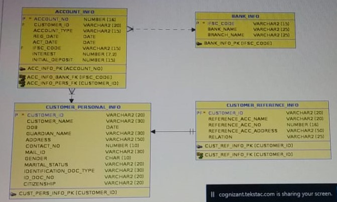
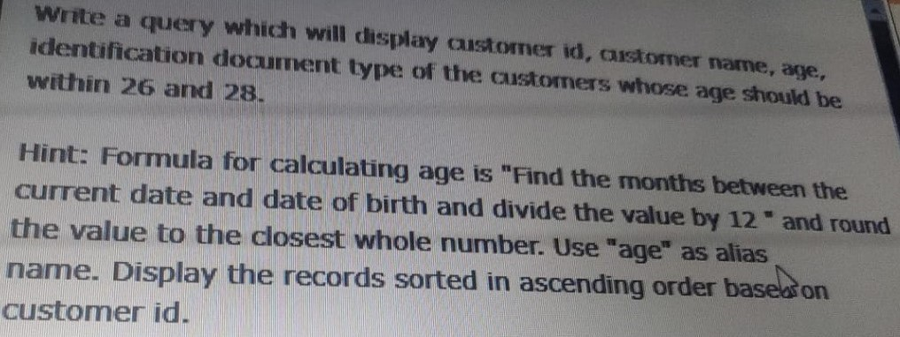
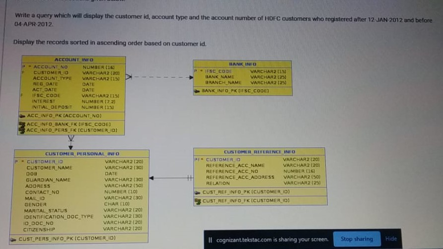

-- BANK SCHEMA :
---------------------------
--1) write a query which will display the customer id, account type and the account number of hdfc customers who registered after 12-JAN-2012
--or before 04-APR-2012 sort by customer id ?
-- (Display the records sorted in ascending order based on customer id.)
solu:)--
SELECT a.customer_id, a.account_type, a.account_no FROM account_info a JOIN bank_info b on (a.ifsc_code = b.ifsc_code)
where b.bank_name = 'HDFC' and reg_date between '12-JAN-2012' and '04-APR-2012' order by a.customer_id;
--2) write a query which will display the customer id, account type they hold , their account number and bank name.
-- (Display the records sorted in ascending order based on customer id.)
solu:)--
select a.customer_id, a.account_type, a.account_no, b.bank_name from account_info a join bank_info b
on (a.ifsc_code = b.ifsc_code) order by a.customer_id;
--3)write a query which will display customer id, customer name, age, identification document type of the customers whose age should be with in 26 and 28.
-- (Display the records sorted in ascending order based on customer id.)
solu:)--
select customer_id,customer_name, round(months_between(sysdate,dob)/12) as "Age" from customer_info
where age between 26 and 28 order by customer_id;
--4) write a query which will display the customer id, customer name, account number, account type and bank name where the customer hold the account sort by customer id.
-- (Display the records sorted in ascending order based on customer id.)
solu:)--
select a.customer_id, customer_name, a.account_no, a.account_type, b.bank_name from account_info a join bank_info b
on (a.ifsc_code = b.ifsc_code) join customer_personal_info c on (a.customer_id = c.customer_id) order by a.customer_id;